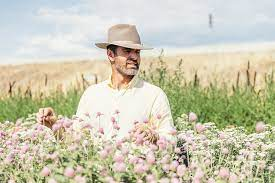

Welcome to The Kinlands
At The Kinlands, we’re reimagining what it means to learn directly from nature, rewilding our minds and replenishing the land with as much or more than we receive.
This way of being is expressed in everything you see here. Our year-round shoppe, brimming with regional produce and elemental homewares. Weekly land experiences through which you can remember nature’s pace, meet our goats and horses, wander a field of flowers, or explore The Kinlands forest garden. Immersive workshops and gatherings inspired by what’s unfolding in the wilderness and the alchemical magic of simplicity. And Earth Smarts, a nature-centered summer camp where kids can deepen their sense of wonder and belonging to the Earth.
You don’t need to homestead or live off grid to be part of The Kinlands community. Like you, we’re learning each day. And we aim to share the Earth’s lessons without sanctimony. This is a space where you can observe, ask questions, and invite the natural world into your everyday life in ways that inspire and excite you. Rewilding starts wherever you are — even if that’s in the middle of a suburb. The Kinlands, too, is suburban. A respite of green where you can breathe freely, touch the Earth, and feel the wild within yourself.
Kinlands Workshops
Garden workshops, Photo Passes, Garden House for Private Events, Four weeks in the life of a horse.
At The Kinlands year-round shoppe, you’ll find seasonal produce, fresh-cut blooms, artisan pastries, and free-range eggs. All of our offerings are harvested in a spirit of reciprocity with the land, and grown either here or by like-minded, regional collaborators.
Riverton Utah Weather
Temperature: ℉
Wind Speed: mph
Wind Chill: ℉
Our Market
Open year-round with fresh veggies, fruits, artisan breads, pastries, made-to-last home goods, linens, gifts, and apothecary items. Each offering is made or grown with honor, in reciprocity with the land. Shop in-store or online.
We believe there are ways to live and harvest that benefit both humankind and the Earth. Through careful observation and a willingness to be led by the land, The Kinlands team is rediscovering those ways. Our minds are ever curious and open, our hearts grounded in the soul of this place. We find satisfaction in the work that keeps us close to the simple beauty of life.
We’re in search of kindred spirits who revere the Earth as teacher and are excited to extend its lessons to our visitors — to build the bones of an enchanting experience in which people of every age can learn from the natural world directly. Each person on our team is an essential partner in creating The Kinlands, remembering and sharing humankind’s collective belonging to Earth as we bloom, grow, harvest, and rest with the seasons.
The work itself is both challenging and fulfilling. You must be open minded, flexible, tough, motivated, and able to solve problems quickly (and at times creatively). Your heart must be fully invested in discovering what the Earth is asking from us at this time.
Because we are led by the land, your work here is unlikely to involve prescribed systems like growing certified-organic produce or homesteading. Our training is about remembering and practicing the forgotten language of life and spirit. In that sense, you’ll certainly experience growth and will likely come away with a clearer view of what it means to live in connection with the land.
We offer a very competitive compensation package as we have a deep interest in long-term teammates who are looking to expand and explore this world together. For the right person, this is the rare career position that can fulfill the heart and support you in abundance.